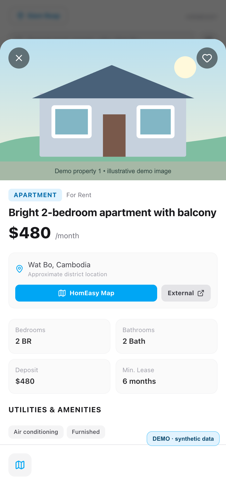

Collection from multiple sources
Separate adapters for Facebook and Khmer24, with error handling and controls for unnecessary traffic.
PROJECT / 01 / PERSONAL PRODUCT
Turning scattered rental listings into one useful search
 APP INTERFACE / EXAMPLE
APP INTERFACE / EXAMPLEContext
Finding a rental in Cambodia can mean checking many Facebook posts and local sites. Listings use different formats and languages, and the same property may appear more than once.
Homeasy aims to bring those listings into one search and reduce the work of comparing details and tracking new posts.
Approach
I split the process into clear steps: collect a post, extract its details, normalize the fields, compare possible duplicates and send the result to the user interface.
Simplified view of the listing pipeline.
What I built
Separate adapters for Facebook and Khmer24, with error handling and controls for unnecessary traffic.
LLM extraction and deterministic rules create a shared data model for filtering.
Compares listing details and image fingerprints (pHash) to reduce repeated results.
Fastify API, React mini app, saved listings, filters and a Telegram bot with search alerts.
Result
The product connects collection, processing, storage and search in a Telegram interface. I continue to improve data quality, speed and integration reliability.
The interactive example uses three fictional posts and combines one repeated listing. It demonstrates the rules in the demo; it is not a benchmark of the live parser or language model.
View selected code samples on GitHub ↗ — this is a public showcase, not the full production repository.
App screens
Real screens from a working build. Prices, locations, photos and offers in these images were created for a safe demo.


Fictional demo data. Screens are from the real app interface.